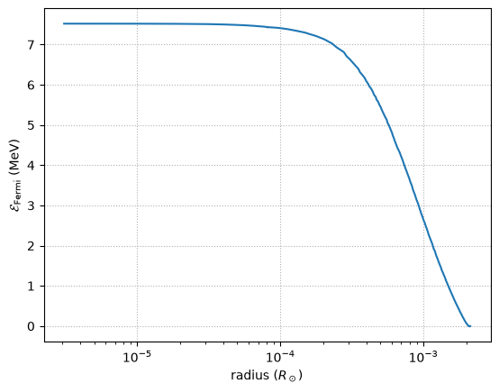
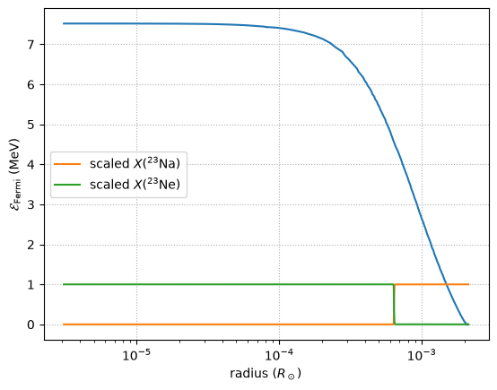
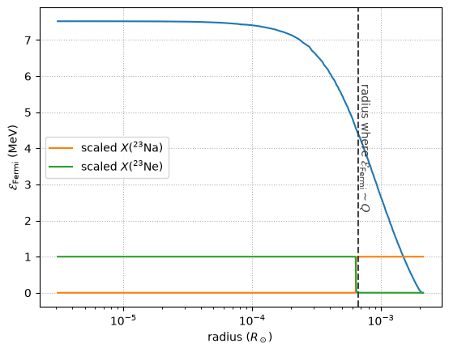

Lab model revisited#
Let’s reload the profiles our lab with the Na23-Ne23 rates and see what they say about the Fermi energy.
import mesa_reader as mr
import numpy as np
model1 = mr.MesaData("lab1/profile1.data")
model2 = mr.MesaData("lab1/profile2.data")
r1 = 10.0**model1.logR
m1 = model1.mass
rho1 = 10.0**model1.logRho
T1 = 10.0**model1.logT
r2 = 10.0**model2.logR
m2 = model2.mass
rho2 = 10.0**model2.logRho
T2 = 10.0**model2.logT
Finding the Fermi energy in our model#
We can compute the Fermi energy, by getting the degeneracy parameter:
So
Note that this is the kinetic energy, since the rest mass was subtracted off. This is the energy that is available to overcome the energy difference in nuclei and electron-capture.
We can compute the Fermi energy from the Fermi-Dirac distribution:
with
Given the density and \(Y_e\), we can root-find on this to get \(\eta\)
import pynucastro as pyna
from pynucastro import mesa_utils
eos = pyna.eos.ElectronEOS()
kB = pyna.constants.constants.k
erg2MeV = pyna.constants.constants.erg2MeV
We’ll work with the late time model
mesa_model = mesa_utils.MesaModel(model2)
Note: this is slow cause it’s doing the integration directly.
E_fermi = np.zeros_like(rho2)
for i, state in enumerate(mesa_model):
es, ps = eos.pe_state(rho=state.rho, T=state.T, comp=state.comp,
compute_derivs=False)
eta = es.eta
E_fermi[i] = eta * kB * state.T
E_fermi *= erg2MeV
import matplotlib.pyplot as plt
fig, ax = plt.subplots()
ax.semilogx(r2, E_fermi)
ax.set_xlabel(r"radius ($R_\odot$)")
ax.set_ylabel(r"$\mathcal{E}_\mathrm{Fermi}$ (MeV)")
ax.grid(ls=":")

Notice that the Fermi energy is highest at the core of the WD, as expected. And it is > 7 MeV, which is large comparable to the typical binding energy / nucleon in a nucleus.
Correspondence with Urca shell#
Let’s overlay \(X({}^{23}\mathrm{Na})\) and \(X({}^{23}\mathrm{Ne})\). Their mass-fractions are small, so we’ll scale by the maximum to make them \(\mathcal{O}(1)\) in the plot.
X_na23 = model2.na23
X_ne23 = model2.ne23
scale = max(X_na23.max(), X_ne23.max())
ax.semilogx(r2, X_na23/scale, label=r"scaled $X({}^{23}\mathrm{Na})$")
ax.semilogx(r2, X_ne23/scale, label=r"scaled $X({}^{23}\mathrm{Ne})$")
ax.legend()
fig

Now let’s compute the Q-value of the reaction to figure out what Fermi energy should be the threshold
Na23 = pyna.Nucleus("na23")
Ne23 = pyna.Nucleus("ne23")
Q = Ne23.mass - Na23.mass
Q
4.375803499999165
Note that these are the atomic masses, from Nubase, so they include the electron mass (we’ll neglect the atomic binding energy)
E_thresh = Q
Now, where is this in our model?
idx = np.where(E_fermi > E_thresh)[0][0]
idx
np.int64(373)
we’ll draw a vertical line indicating where \(\mathcal{E}_\mathrm{Fermi} \sim Q\)
ax.axvline(r2[idx], color="0.25", ls="--")
ax.text(r2[idx], 4, r"radius where $\mathcal{E}_\mathrm{Fermi} \sim Q$",
rotation=270, color="0.25", verticalalignment="center")
fig

Notice that the location of \(\mathcal{E}_\mathrm{Fermi} = Q\) corresponds to the radius where the \(A=23\) Urca pair nuclei switch abundances.
Important
This is approximate, since we are ignoring the structure of the nuclei and its energy levels.